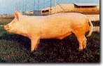
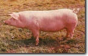

E' forse la razza suina più conosciuta ed apprezzata al mondo. La sua formazione risale al XVIII
secolo e la
sua culla si ebbe nella contea di York partendo da scrofe locali e verri importati dall'Oriente (cinesi,
siamesi).
Dal 1860 circa vennero ufficiaomente riconosciuti i caratteri morfologici ed attitudinali che ben presto
dovevano
interessare il mondo: spiccate precocità e prolificità, grande mole, notevole attitudine alla produzione
di
carne,
scheletro relativamente ridotto ed elevate rese di macellazione.

LANDRACE
La razza è il risultato dell'incrocio, da parte di allevatori Danesi, di soggetti locali con
soggetti di
razza Large White e di una successiva
azione di selezione genealogica, morfologica e funzionale ed di controllo genetico dei riprodutori.
I
soggetti
Landrace hanno cute rosea, setola bianca e rada, orecchie di media grandezza, leggermente pendenti,
tronco
molto lungo per 1 o 2 vertebre dorso-lombari soprannumerarie (fenomeno non raro di variazione degli
organi
in serie), linea dorso-lombare orizzontale, costati piatti, finchi profondi (bacon), cosce e natiche
(prosciutti)
molto sviluppate. Visti di profilo, i suini Landrace ricprdano la forma del siluro. Sono precoci,
producono molta
carne magra e poco lardo. Le scrofe sono fra le più prolifiche (hanno 16 capezzoli) ed ottime madri.
